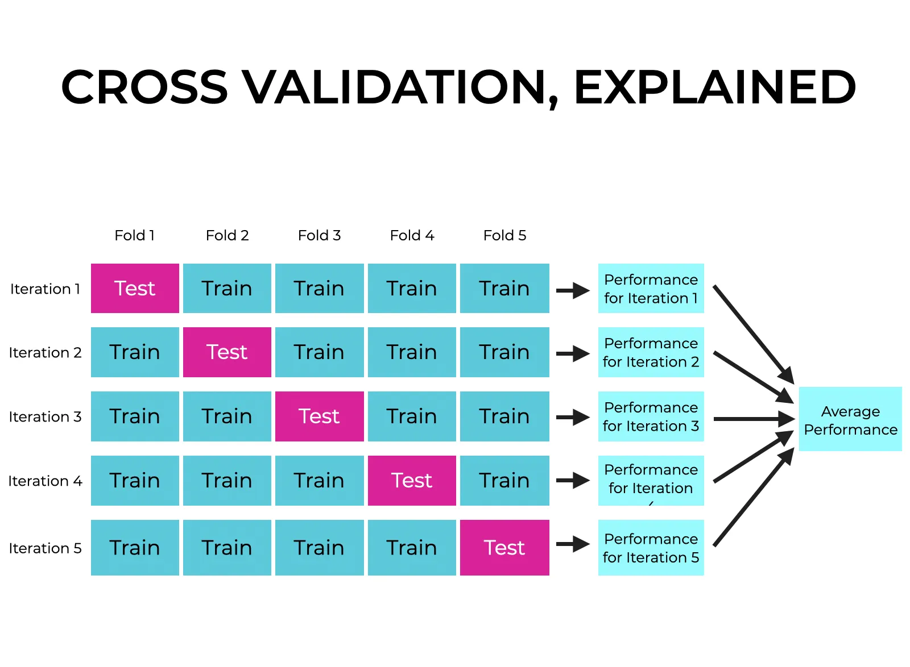
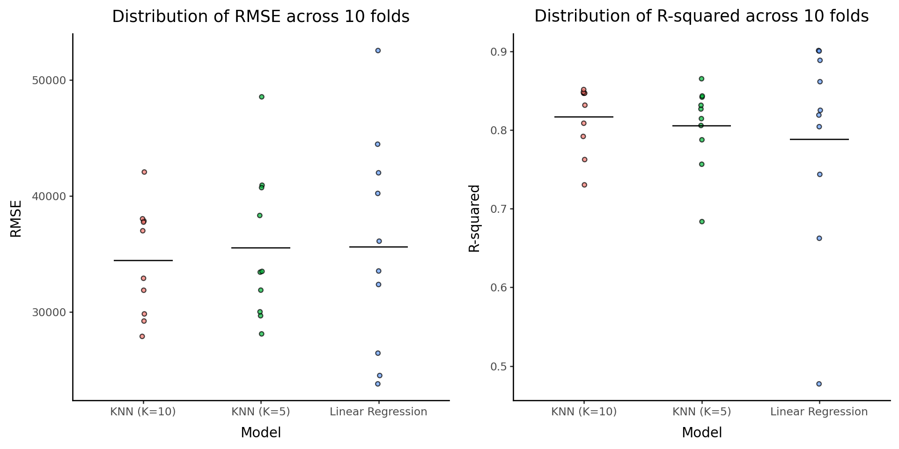

<class 'pandas.DataFrame'>
RangeIndex: 2930 entries, 0 to 2929
Data columns (total 74 columns):
# Column Non-Null Count Dtype
--- ------ -------------- -----
0 MS_SubClass 2930 non-null str
1 MS_Zoning 2930 non-null str
2 Lot_Frontage 2930 non-null int64
3 Lot_Area 2930 non-null int64
4 Street 2930 non-null str
5 Alley 2930 non-null str
6 Lot_Shape 2930 non-null str
7 Land_Contour 2930 non-null str
8 Utilities 2930 non-null str
9 Lot_Config 2930 non-null str
10 Land_Slope 2930 non-null str
11 Neighborhood 2930 non-null str
12 Condition_1 2930 non-null str
13 Condition_2 2930 non-null str
14 Bldg_Type 2930 non-null str
15 House_Style 2930 non-null str
16 Overall_Cond 2930 non-null str
17 Year_Built 2930 non-null int64
18 Year_Remod_Add 2930 non-null int64
19 Roof_Style 2930 non-null str
20 Roof_Matl 2930 non-null str
21 Exterior_1st 2930 non-null str
22 Exterior_2nd 2930 non-null str
23 Mas_Vnr_Type 1155 non-null str
24 Mas_Vnr_Area 2930 non-null int64
25 Exter_Cond 2930 non-null str
26 Foundation 2930 non-null str
27 Bsmt_Cond 2930 non-null str
28 Bsmt_Exposure 2930 non-null str
29 BsmtFin_Type_1 2930 non-null str
30 BsmtFin_SF_1 2930 non-null int64
31 BsmtFin_Type_2 2930 non-null str
32 BsmtFin_SF_2 2930 non-null int64
33 Bsmt_Unf_SF 2930 non-null int64
34 Total_Bsmt_SF 2930 non-null int64
35 Heating 2930 non-null str
36 Heating_QC 2930 non-null str
37 Central_Air 2930 non-null str
38 Electrical 2930 non-null str
39 First_Flr_SF 2930 non-null int64
40 Second_Flr_SF 2930 non-null int64
41 Gr_Liv_Area 2930 non-null int64
42 Bsmt_Full_Bath 2930 non-null int64
43 Bsmt_Half_Bath 2930 non-null int64
44 Full_Bath 2930 non-null int64
45 Half_Bath 2930 non-null int64
46 Bedroom_AbvGr 2930 non-null int64
47 Kitchen_AbvGr 2930 non-null int64
48 TotRms_AbvGrd 2930 non-null int64
49 Functional 2930 non-null str
50 Fireplaces 2930 non-null int64
51 Garage_Type 2930 non-null str
52 Garage_Finish 2930 non-null str
53 Garage_Cars 2930 non-null int64
54 Garage_Area 2930 non-null int64
55 Garage_Cond 2930 non-null str
56 Paved_Drive 2930 non-null str
57 Wood_Deck_SF 2930 non-null int64
58 Open_Porch_SF 2930 non-null int64
59 Enclosed_Porch 2930 non-null int64
60 Three_season_porch 2930 non-null int64
61 Screen_Porch 2930 non-null int64
62 Pool_Area 2930 non-null int64
63 Pool_QC 2930 non-null str
64 Fence 2930 non-null str
65 Misc_Feature 106 non-null str
66 Misc_Val 2930 non-null int64
67 Mo_Sold 2930 non-null int64
68 Year_Sold 2930 non-null int64
69 Sale_Type 2930 non-null str
70 Sale_Condition 2930 non-null str
71 Sale_Price 2930 non-null int64
72 Longitude 2930 non-null float64
73 Latitude 2930 non-null float64
dtypes: float64(2), int64(32), str(40)
memory usage: 2.4 MBMATH 4025: Cross Validation and Resampling
Dr. Eric Friedlander
Concept Check
- Why do we split our data before fitting a model?
- Suppose we have a data set with \(n = 1000\) observations. We perform a 70/30 split. How many observations are in the training set and how many are in the test set?
Resampling & Cross Validation
Data Splitting: Discussion
- Why do we split our data before fitting a model?
- To prevent overfitting
- What are some pitfalls we might encounter if we compare A LOT of models on the test set? (E.g. 100 different thresholds or \(k = 1, 2, \ldots, 100\) neighbors)
- We open ourselves up to information leakage
- Potential solution… three way split (training/validation/test)
- Better solution… cross validation and resampling
Resampling

Figure 10.1 from TMWR
Cross-Validation Terminology
- Divide training set into two sets
- Analysis set (Training fold): fit the model (similar to training set)
- Assessment set (Validation fold): evaluation the model (similar to test set)
K-Fold Cross-Validation (CV)
- Partition your data into \(K\) randomly selected non-overlapping “folds”
- Folds don’t overlap and every training observation is in one fold
- Each fold contained \(1/K\) of the training data
- Looping through the folds \(k = 1, \ldots, K\):
- Treat fold \(k\) as the assessment set
- Treat all folds except for \(k\) as the analysis set
- Fit model to analysis set (use whole modeling workflow)
- Compute error metrics on assessment set
- After loop, you will have \(K\) copies of each error metrics
- Average them together to get performance estimate
- Can also look at distribution of performance metrics

CV Workflow in Python
Data: Ames Housing Prices
A data set from De Cock (2011) has 82 fields were recorded for 2,930 properties in Ames IA.
Goal: Predict Sale_Price.
Your Turn!!!
Answer the following questions using the ames dataset.
You start with an initial 70/30 training/test split. How many observations are in your training and test set?
You then perform 10-Fold CV on the training set. How large is each analysis set and each assessment set and how many analysis and assessment sets do you have?
Do your analysis sets overlap? Do your assessment sets overlap?
How many times will you fit your model? How many different MSE’s will you have?
Initial Data Split
Define Folds
Other Types of Cross Validation
- Repeated K-Fold: Repeats K-Fold CV multiple times with different randomizations. Useful for getting a more robust estimate of performance.
- Stratified K-Fold: Ensures that each fold has the same proportion of observations with a given label. Crucial for classification problems with imbalanced classes.
Define Model(s)
Define Preprocessing
We’ll set up a ColumnTransformer to handle preprocessing. For simplicity in this example, we will just isolate numeric and categorical predictors. We’ll do a deeper dive into preprocessing in the next lecture.
# Identify purely numeric and categorical columns
numeric_features = X_train.select_dtypes(include=['int64', 'float64']).columns
categorical_features = X_train.select_dtypes(include=['object', 'category']).columns
# Simple preprocessing: scale numeric, one-hot encode categorical
preprocessor = ColumnTransformer(
transformers=[
('num', StandardScaler(), numeric_features),
('cat', OneHotEncoder(handle_unknown='ignore'), categorical_features)
])Define Pipelines
Fit and Assess Models
We will use cross_validate to get both MSE and \(R^2\). Note that scikit-learn uses negative MSE by default so that higher is always better. We’ll negate it back.
scoring = {'r2': 'r2', 'neg_mse': 'neg_mean_squared_error'}
lm_cv = cross_validate(lm_pipeline, X_train, y_train, cv=kf, scoring=scoring)
knn5_cv = cross_validate(knn5_pipeline, X_train, y_train, cv=kf, scoring=scoring)
knn10_cv = cross_validate(knn10_pipeline, X_train, y_train, cv=kf, scoring=scoring)What does this create
Collecting Metrics
Let’s look at the average RMSE and \(R^2\) across the 10 folds:
| Loading ITables v2.6.2 from the internet... (need help?) |
Visualizing CV Metrics
We can visualize the distribution of \(R^2\) and RMSE across the 10 folds:

Questions
- How many times did we train a model?
- Which model formulation was the best?
Final Model
- After choosing best model/workflow, fit on full training set and assess on test set
final_fit = lm_pipeline.fit(X_train, y_train)
test_preds = final_fit.predict(X_test)
final_rmse = np.sqrt(mean_squared_error(y_test, test_preds))
final_r2 = r2_score(y_test, test_preds)
print(f"Test RMSE: {final_rmse:.2f}")
print(f"Test R-squared: {final_r2:.4f}")Test RMSE: 26391.67
Test R-squared: 0.8811Leave-One-Out Cross-Validation (LOOCV)
- \(n\)-Fold cross validation
- Iterate through training set
- Treat observation \(i\) has assessment set
- Treat other \(n-1\) observations as analysis set
Suppose you implement LOOCV on a dataset with \(n=100\) observations.
What is the size (number of observations) of each analysis set?
What is the size of each assessment set?
How many times must you fit a model to complete the overall LOOCV process?
LOOCV vs. K-Fold CV
- Typically we use 5-Fold or 10-Fold CV
- \(K\)-Fold is much less computationally expensive
- \(K\) actually gives better estimates of your test error… Why?
- Bias-Variance Trade-Off
- LOOCV has the lowest level of bias but highest level of variance
- 5- and 10-Fold CV have medium levels of bias but lower variance
Recap
- Data Splitting: We split data to prevent overfitting and information leakage.
- Cross-Validation: Dividing training data into analysis (training) and assessment (validation) sets to robustly evaluate model performance.
- K-Fold CV: Partitions data into \(K\) non-overlapping folds. A common go-to due to its balance of bias and variance computational efficiency.
- Variants:
RepeatedKFoldfor more robust estimates,StratifiedKFoldfor classification. - Python implementation:
- Define folds using
KFold - Encapsulate preprocessing and modeling in a
Pipeline - Evaluate using
cross_validateorcross_val_score
- Define folds using